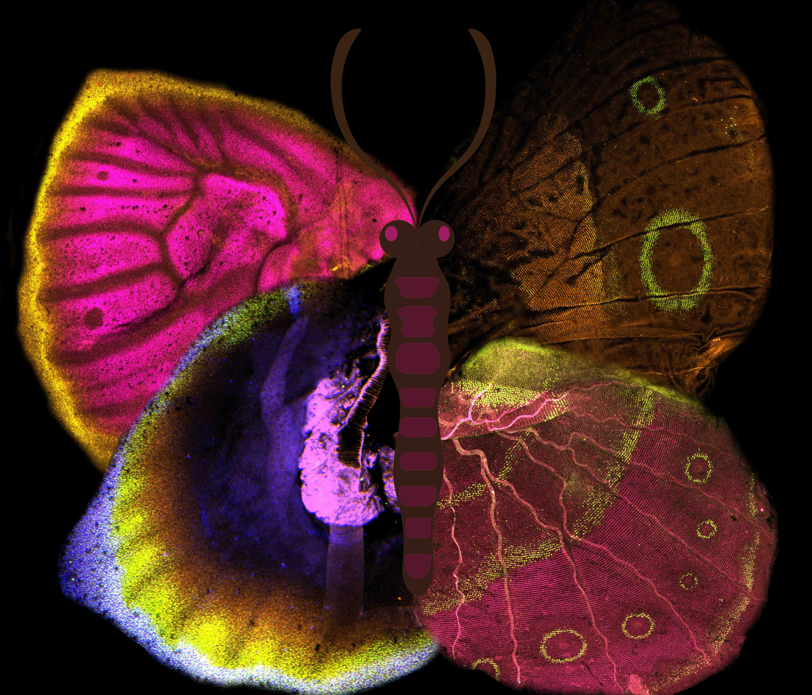
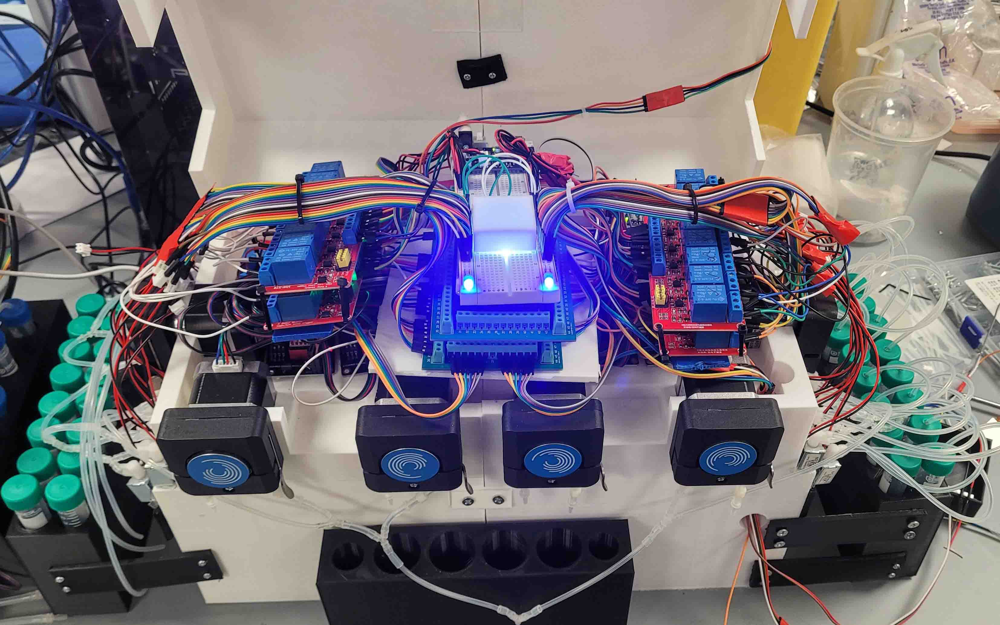
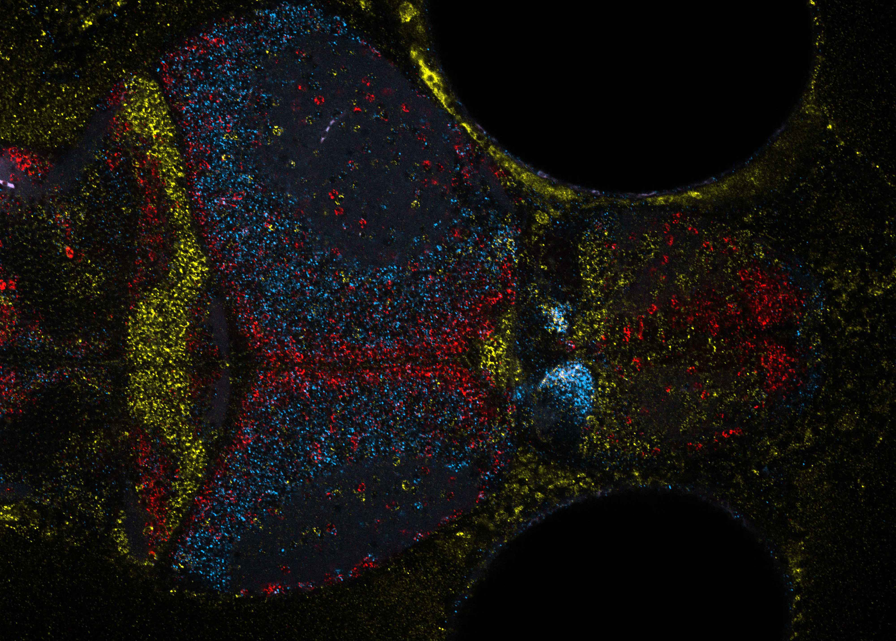

Developmental and Evolutionary Biology
I study how gene regulatory networks evolve to generate novel morphological traits, utilizing the model organism Bicyclus anynana to understand biological pattern formation.
By combining functional genetics, spatial biology, and comparative developmental analyses, my work reveals how conserved genetic modules such as the Wnt, Dpp, and Notch signaling pathways are repurposed during evolution. My approach frequently integrates precise laser microdissection of specific wing sectors, multiplexed gene detection, CRISPR mediated functional knockout, pharmacological assays, and RNA-seq analysis to meticulously map genetic architectures.

Artificial Intelligence, Robotics & Automated Biology
I develop custom, open-source laboratory automation systems to bridge the gap between high-throughput biology and precision robotics. Utilizing microcontrollers (Arduino, ESP32) and high-end 3D printing fabrication, I build modular instruments like the NanoPulse microinjectors, the Multiplexer and RemBot for gene localization in fixed tissues, and the FISHER automated aquatic feeding system for behavioral assays.
Furthermore, I apply deep learning frameworks (PyTorch, TensorFlow; YOLO, ResNet) to agricultural and biological challenges. Recent platforms like the CORN-DRIVE system utilize edge-AI for real-time plant health detection, combining computer vision pipelines with closed-loop fluidic feedback to accelerate biological discovery.

Spatial Biology & Multiplex-FISH Technologies
I am the lead developer of the RAM-FISH (Rapid Amplified Multiplexed-FISH) system, a high-resolution imaging platform designed to map gene expression across intact tissues with a strong emphasis on open-source, cost-effective accessibility to lower the barriers for spatial imaging.
These methods enable the direct visualization of mRNAs expressed in developing organs and provide a bridge between genomics and morphology.

Neurobiology, Behavior & Academic Mentorship
My research explores how animals learn and how specific neural genes modulate behavior, utilizing tools like the AI-driven FISHER system to seamlessly link molecular mechanisms to complex behavioral phenotypes through neurobiological and genetic approaches.
Central to all of these scientific endeavors is a deep commitment to mentorship and open science. I am deeply invested in training the next generation of interdisciplinary scientists, having proudly mentored over a dozen undergraduate students, alongside master's candidates and high school researchers, helping them navigate the intersection of biology, robotics, and coding.